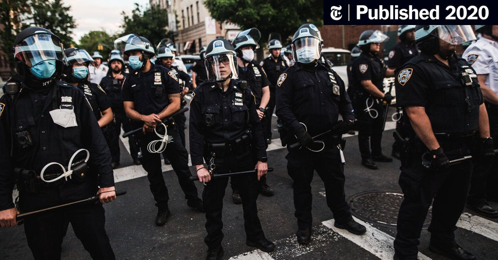

1 / 3

"Six people were apprehended in connection with the killing of Kisan Morcha leader of the Delhi BJP Surendra Matiala in Dwarka’s Bindapur area"
2 / 3

"The woman went to her college to appear for her BA examination. After the exam, when she was going back to her home, two men riding a bike approached her with a pistol and shot her dead."
3 / 3

"Bihar man accused in multiple murder cases nabbed from Kolkata. According to the police, the man reached Kolkata one and a half months back and was residing in a rented house in the Topsia area."
ABOUT CRMS
CRIME RECORD MANAGEMENT SYSTEM is a software application designed to automate and streamline the
process of managing crime records.The system provides a centralied solution for law enforcement agencies
to record , store and manage information about criminal activities and incidents. The Crime Management System
apply to Police Stations all across the country .It specifically looks into the Crime detection and prevention.
Conviction of criminals depends on a highly responsive backbone of Information Management. The efficiency of
the police and the effectiveness with which it tackles crime depend on what quality of information it can
derive from its existing records and how fast it can have access to it.
FEATURES OF CRIME RECORD MANAGEMENT SYSTEM
- Admin can add new Login records
- Admin can see the login details
- Admin can add new Criminal records
- Admin can delete the criminal records
- Admin can update the criminal records
- All Criminal forms are validated on client side using Javascript
- Admin can add new Police records
- Admin can see the list of Police details